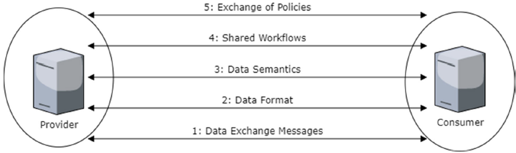

Overordnet oppsummering

1. Motivasjon
Dagens landskap av nasjonale og sektorielle fellesløsninger for datautveksling er fremdeles, per 2020, fragmentert, og svarer ikke godt nok på faktiske behov og krav til digitalisering og samhandling på tvers av sektorene. Et tydelig symptom på dette er fortsatt bruk av tradisjonell post på papirform og lange saksbehandlingsprosesser. Tidligere NOU-rapporter og innspill rundt meldingsutveksling har gitt noen gode forslag til strategier og fellesløsninger basert på tradisjonelle forestillinger om saksbehandling i offentlig sektor, men dette har ikke vært nok og er ikke lengre godt nok. Nyere teknologier og muligheter tilsier ny tenking og nye strategier, samtidig som vi må finne vei ut fra dagens landskap.
For å komme videre sammen på tvers av sektorene, er det essensielt at vi har et minimum av felles rammer og felles forståelse av konsepter og begreper.
2. Interoperabilitet på alle lag
GAIA-X and IDS, Position Paper | Ver. 1 | January 2021 beskriver ulike "interoperabilitetslag". Disse tilsvarer stort sett lagene i EIF-modellen.
Exchange of Policies:
